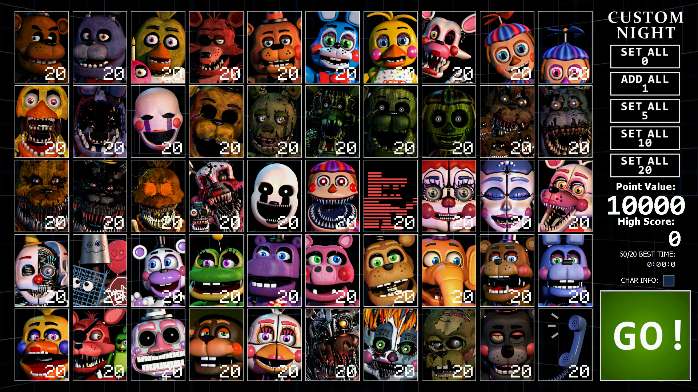

Ultimate Custom Night é o sétimo jogo de terror da franquia Five Nights at Freddy's também feito individualmente por Scott Cawthon.
Lançado em 27 de junho de 2018, o jogo mais uma vez ganhou popularidade por sua atmosfera assustadora, customização extrema e também por ser gratuito. Apesar de tudo não faz parte da história principal, por isso é um spin-off.
Ultimate Custom Night permite você customizar completamente a sua noite com 50 animatrônicos que apareceram nos 6 jogos anteriores, cada um com mecânicas completamente distintas sendo possível colocar a dificuldade de cada um entre 0 e 20.
A jogabilidade de Ultimate Custom Night envolve a gestão extrema de recursos.
Você deve gerir a sua bateria, fechar e abrir portas, fechar e abrir tubulações, dar reset no sistema de ventilação do local, colocar máscara, gerir temperatura da sua sala, gerir a quantidade de barulho feito, entre outros aspetos.